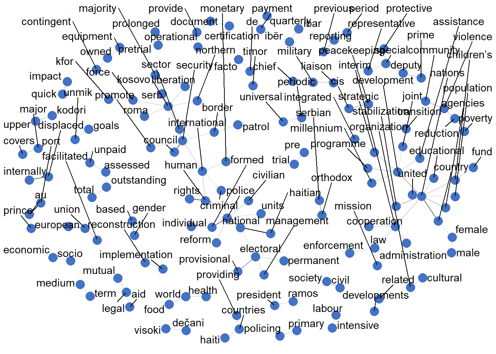
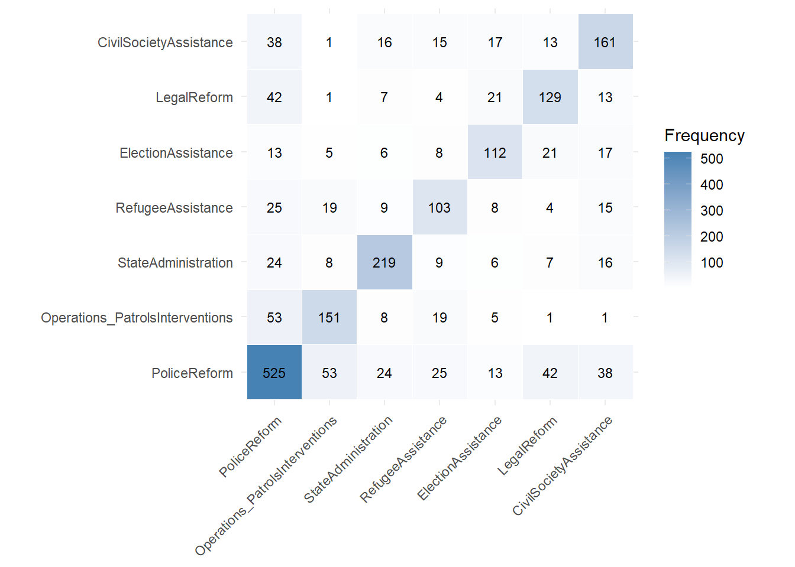
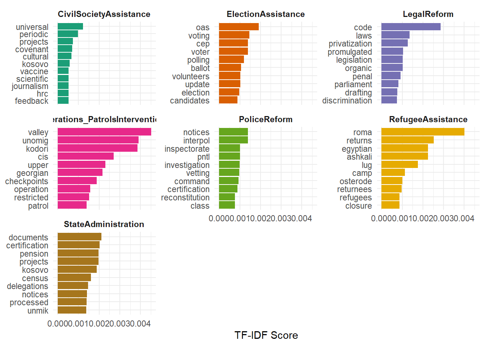

| PKO | Total Reports | After pre-selection | After parsing | Coverage (Selection) | Coverage (Parsing) |
|---|---|---|---|---|---|
| MINUGUA | 1 | NA | NA | NA% | NA% |
| MINUJUSTH | 7 | NA | 7 | NA% | 100.0% |
| MINUSTAH | 38 | NA | 30 | NA% | 78.9% |
| MIPONHU | 1 | NA | NA | NA% | NA% |
| MIPONUH | 8 | NA | NA | NA% | NA% |
| ONUCA | 27 | NA | NA | NA% | NA% |
| ONUSAL | 21 | NA | NA | NA% | NA% |
| UNCRO | 6 | NA | NA | NA% | NA% |
| UNMIBH | 23 | NA | NA | NA% | NA% |
| UNMIH | 7 | NA | NA | NA% | NA% |
| UNMIK | 74 | NA | 38 | NA% | 51.4% |
| UNMISET | 10 | NA | 4 | NA% | 40.0% |
| UNMISH | 1 | NA | NA | NA% | NA% |
| UNMIT | 12 | NA | 12 | NA% | 100.0% |
| UNMOP | 56 | NA | NA | NA% | NA% |
| UNMOT | 23 | NA | NA | NA% | NA% |
| UNOMIG | 63 | NA | 7 | NA% | 11.1% |
| UNPREDEP | 12 | NA | NA | NA% | NA% |
| UNPROFOR | 38 | NA | NA | NA% | NA% |
| UNPSG | 2 | NA | NA | NA% | NA% |
| UNSMIH | 3 | NA | NA | NA% | NA% |
| UNTAC | 12 | NA | NA | NA% | NA% |
| UNTAES | 10 | NA | NA | NA% | NA% |
| UNTAET | 8 | NA | NA | NA% | NA% |
| UNTMIH | 1 | NA | NA | NA% | NA% |
PACT-ML: Coding United Nation Peacekeeping ACtivities from reports to the Secretary-General
Using Bag-of-Words approaches and BERT models
Abstract
The Peacekeeping Activity Dataset (PACT) is the first of its kind data collection to shine light on what peacekeepers actually implement while deployed. In the past, many projects have looked towards mandates to study how specific tasks and mission success are related. PACT used report data from the mission heads to the Secretary-General of the UN to code up to 39 categories of task implementation on six different engagement levels. This project, PACT-ML, aims to extend the data collections of PACT 1.0 (Blair et al. (2022)) and PACT 2.0 (Otto (2024), Otto et al. (2024)) by using selected reports of PACT 2.0 to examine the application of Machine Learning / Natural Language Processing techniques to automatically code this sort of data from the reports.
Keywords
Machine Learning, Natural Language Processing, United Nations Peacekeeping, BERT, roBERTa
1 Introduction
In recent years, United Nations peacekeeping operations (UNPKOs) have faced growing political resistance and resource constraints, resulting in a stagnation of new mission mandates and increasing difficulty in sustaining existing ones. At the same time, efforts to systematically monitor and evaluate peacekeeping effectiveness—particularly through structured data collection—have become more difficult to maintain. This study explores the feasibility of using natural language processing (NLP) and machine learning methods to automatically code newly written peacekeeping mission reports. The motivation stems from the recognition that manual coding efforts, such as those employed in the PACT project, are resource-intensive and unlikely to be extended to cover post-2018 mission data. As such, automated coding presents a scalable alternative to support continued research and institutional monitoring.
The empirical foundation of this effort is the PACT 2.0 dataset (Otto (2024)), which codes the activities of peacekeeping missions based on United Nations Secretary-General (UNSG) progress reports. PACT 2.0 builds on the original Peacekeeping Activity Dataset (PACT 1.0, yet unreleased) and extends its geographic scope beyond Africa to include 23 missions across Europe, the Americas, and Asia, all mandated after 1988 in civil war contexts (Otto and Honda (2024)). The dataset captures operational behavior at the paragraph level—tracking specific actions undertaken by peacekeepers, the nature of their engagement, and whether these activities involved international partners. Reports are coded in fine detail, producing a rich training corpus for supervised machine learning approaches. The goal of this work is to assess whether models trained on PACT-coded data can automatically identify similar activities in new, uncoded reports.
This initiative also draws inspiration from related efforts such as the PEMA (Peacekeeping Mandates) dataset (Salvatore et al. (2022)), which systematically codes peacekeeping tasks as defined in Security Council resolutions. PEMA distinguishes among various modalities (e.g., monitoring, assisting, securing) and levels of directive authority (requested vs. encouraged), offering insights into how mandates evolve and guide operational priorities. While PEMA focuses on mandated intent, PACT focuses on reported implementation, offering a valuable complement for understanding peacekeeping effectiveness on the ground. Automating this kind of report-level analysis could help bridge the gap between what peacekeepers are tasked to do and what they actually report doing—at scale and in near real time.
In sum, this study tests whether combining high-quality annotated data from the PACT project with modern NLP techniques can offer a scalable solution to peacekeeping data collection, thereby enabling continuous monitoring of peacekeeping behavior even in the absence of new manual coding efforts.
2 Data
- Describe PACT data, describe report formats, reference the PACT/PEMA codebooks with same coding categories for all reports since 1989
This is a sentence.1
Some old reports (e.g. ONUCA) were left out due to issues in parsing, because the official UN documents are just a bad scan of typewritten reports. UNMIBH and UNTAET reports were left out due to their two-column layout. We also decided for the exclusion of cross-country reports (missions active in more than one country) due to issues with the systematic difference in language to describe activities and the adjacent codings, which are sometimes at the country level and sometimes at the report level. For identifying the reports to parse and use for the model, we used ‘PyMuPDF’ and selected based on some characteristics from the file, like first page margins. The reports were then clustered using kNN, and the second cluster included the report types that could be parsed. There were 133 reports identified, which was deemed sufficient for the scope of this term paper. If we assume that the content of the reports and the features of the layout used for clustering do not coincide, the subsetting should not interfere with our results systematically. In summary, the data mostly corresponds to post-2000 UN reports included in the PACT 2.0 data set, which coincides with the third and fourth generations of UN Peacekeeping Missions.
2.1 Validity checks
To be able to use our models on the data, we need to identify which paragraph text belongs to the specific coding in the PACT 2.0 data set. We take the paragraph number, from which the manual coders at the University of Uppsala made their judgement, as ground truth. We do this because it is highly unlikely that mistakes happened, as each paragraph as per the UN reporting scheme carries its paragraph number at the beginning, and coders had to mark the relevant sentences within the PDFs before adding them to the database.2
The reports were then parsed. Since the Annexes were not as expected in a separate file, but included in the main report, the numbering at times was not consecutive, but started again at ‘1.’ in the middle of the parsed paragraphs. To sucessfully eliminate the paragraphs that were extracted from the Annexes, the paragraph’s number at the beginning of each paragraph needed to increase strictly monotonically. Reports failed the parsing pipeline and were not added to the training data if the extracted paragraphs were 10% more or less than the expected paragraphs according to the PACT data. This ensures good data quality for the parsed reports.3
Table 2 shows the number of reports per UNPKO in PACT 2.0, as well as shares of the reports that made it through pre-selection and parsing. As can be seen, the PDF-formats that the parsing pipeline was able to process is heavily skewed towards a few missions. This is not surprising, as some missions took place only in the 1990s, while the included missions are mostly of the newer peacekeeping generations.
Interestingly, we can see that some reports included after pre-selection do not appear in the PACT 2.0 dataset, meaning that there were no peackeeping activities carried out at the time of the report. This concerns three reports in UNIKOM, as well as one report in UNMIT. Most reports were filtered out for UNOMIG, which is again not surprising, as the mission lasted from 1993 until 2009, meaning that most early reports were in the typewritten format and therefore disgarded. For our models, this means that results are generalizable only to a certain extent, which will be discussed in Section 6.
In total, we were able to extract 6029 paragraphs, from which 1819 were matched to codings in PACT 2.0. There were multi-label paragraphs (paragraphs that reported more than one activity) in 256 cases. For 29 paragraphs out of the included reports, parsing failed on the paragraph level.
2.2 Uncertainty quantification
Unlike the paragraph number, which we take as ground truth, the coding itself can not be considered to be ground truth. Bachl and Scharkow (forthcoming) discuss the importance of accurate and consistent human classification, particularly in the context of supervised computational text analysis (CTA) methods. This human input is analogous to the role of human coders in traditional content analysis, where intercoder reliability is a key concern. Content analysis is particularly vulnerable to measurement error because it depends on the “consensual reading” (Krippendorff (2018), p. 212) of messages that are semantically or visually ambiguous, interpreted by different coders or at different times.
Errors in this input (akin to having training data that is not “ground truth”, or low intercoder reliability for this case) can increase error rates:
Supervised CTA relies on human judgment: Supervised approaches to CTA require human intervention. Researchers must provide either pre-defined classification rules or example texts that have been classified by humans. These classified examples or rules serve as the training material from which computational algorithms learn to classify large amounts of text.
Errors bias the analysis results: These errors can, in turn, bias the results of an analysis based on the classification. This means if the human-classified training data contains errors or inconsistencies (i.e., is not “ground truth”), the model trained on this data will learn these errors and inconsistencies, leading to biased or inaccurate classifications on new data and increasing the overall error rate of the CTA. Generally, the error rate grows exponentially if a bias is introduced at the first stage.
Bachl and Scharkow (2017) introduce a method to counter this using matrix back-calculation. Sadly, the intercoder reliability checks for the process of coding PACT 2.0 were not available to me, which is why the uncertainty estimates and error rates are not quantified further based on the reliability of the training sources. Without multiple codings for the same paragraph, and the decision that was made for the final data set, potential systematic bias can not be worked out. In general, the error rates reported in Section 5 are therefore likely to underestimate the true error rates of classification.
3 Exploratory Data Analysis
3.1 Text Corpus Analysis
Figure 2 shows that paragraphs included in the models (i.e. that included peacekeeping activities) did only differ sligthly from all parsed paragraphs (mean 123 vs. 117 tokens; median 112 vs. 102 tokens), indicating that peacekeeping-relevant information is not strongly associated with paragraph length. This suggests that semantic content—rather than verbosity—drives relevance, and supports the feasibility of using NLP models that rely on textual meaning rather than surface-level features. However, it is important to note that parsing is more likely to fail for longer paragraphs, as they often include numbered lists or bullet points. Further, if a line starts with a number (e.g. “The second unit went on patrol and encountered with the local authorities of district linebreak 17.”), the parsing shortened the paragraph, as everything after the number 17 would be recognized as a new paragraph, and removed during the check for consecutive numbering.4

Looking more specific at the vocabulary, we identified the use of 7383 unique words (including stop-words). Table 2 shows the relation to the total number of words. The rather low value of for type-token ratio of 0.063 indicates repetition, formulaic writing, or specialized language, which we expect for the normed UN reporting (Integrated reporting from peacekeeping operations to UNHQ (2019)). Therefore, language seems to be rather standardized across reports. For our language model to be able to code the paragraphs into peacekeeping activities well, we need to look at differentiated language use across categories.
| Total words | Unique words | Type-token ratio |
|---|---|---|
| 117704 | 7383 | 0.0627251 |
To analyze the text corpus further, we look at Zipf’s law of natural language. Zipf (1949) says:
If one ranks all the words occurring in a large corpus of natural language texts by their frequency of occurrence, the frequency of any word is inversely proportional to its rank.
The Zipf’s Law plot of the corpus shows a clear power-law distribution of word frequencies, confirming that the text follows the statistical patterns typical of natural language. A small number of words are extremely frequent, while the majority are rare—consistent with Zipfian behavior. However, this observation stands in contrast to the relatively low type-token ratio observed in the data, which suggests a more repetitive, possibly technical or formulaic language with limited lexical diversity. This apparent contradiction can be explained by the specialized nature of the corpus: although the overall distribution of word frequencies follows natural language norms, the specific context (i.e. peacekeeping reports) likely relies on a constrained vocabulary and frequent reuse of mission-specific terminology. This supports the use of contextual models (e.g., transformer-based embeddings) over token frequency-based approaches like TF-IDF, which may not adequately capture semantic distinctions in this type of structured and domain-specific text.
3.1.1 N-Gram Analysis
Figure 4 displays the most frequent trigrams and bigrams in the text corpus of peacekeeping mission reports included in the models, and offer insight into the dominant themes and institutional actors mentioned. The top trigrams such as:
- “haitian national police”
- “port au prince”
- “gender based violence”
- “internally displaced persons”
- “united nations country”
and corresponding bigrams (not shown, but often subsumed in these trigrams), suggest a strong institutional framing. This language reflects the frequent reference to national institutions (e.g., “haitian national police”), geographic anchors (e.g., “port au prince”), and core thematic concerns of peacekeeping operations, such as gender-based violence, displacement, and human rights violations.
With the references to national authorities, categories like ‘PoliceReform’ can be identified well, since the mentioning of the name for national authorities can link activities to specific common terms used to name these autorities. On the other hand, geographical anchors may bias the results. The importance of these features in combination with differentiated activity implementation across missions can lead the model to learn that the activity was carried out because of the location, not because of activity-specific language. This has potential implications for model generalization. We will discuss feature importance in Section 5.
Below are the most relevant bigrams (cutoff for frequency higher than 50, Figure 5 (a)) and trigrams (frequencies higher than 25, Figure 5 (b)). These network graphs embed the most frequent bi- and trigrams into a larger context of appearance.

3.2 Category-Specific Analysis
The differences in Type-Token Ratio (TTR) across categories have important implications for our modeling approaches. For Bag-of-Words (BoW) models, high TTR categories like ‘RefugeeAssistance’ may lead to sparser feature representations due to their richer vocabulary, which can affect model performance if not enough training data is available. Conversely, low TTR categories like ‘PoliceReform’ may produce denser, more repetitive word distributions, potentially making them easier to model with BoW but also more susceptible to overfitting on frequent terms. For BERT models, which capture contextual semantics, high lexical diversity can enhance learning if the model is exposed to varied contexts, but it may also challenge generalization if vocabulary usage is highly domain-specific.

The co-occurence matrices in Figure 7 indicate very similar co-occurences in the subset of data compared to the full PACT 2.0, with slightly higher co-occurence of the labels ‘PoliceReform’ with ‘LegalReform’ and ‘CivilSocietyAssistance’. To our advantage, the co-occurence of textually related categories of ‘PoliceReform’ and ‘Operations’, which both may use police or military language, is smaller in our subset.
Figure 8 shows that the overall label distributions stays comparable between the full PACT 2.0 data set and the subset parsed for analysis. Notably, ‘CivilSocietyAssistance’ is carried out heavier in the selected mission reports, while there was less use of force. This finding makes sense, as the use of force is only mandated for very specific third and fourth generation UNPKOs, also referred to as “robust” peacekeeping missions. These missions were mostly deployed in armed conflicts in Africa. Since the data of PACT 1.0, which covers Africa, was not available, the reported activities in our subset rely heavily on the UNOMIG mission (Figure 9). This potentially leads to results that rely on mission-specific wording or geographic anchors in our models.
For the other missions, most labels are present in varying proportions. Especially for the feature importance of geographical anchors, the multiplicity of missions per label should lead to better results and less importance of these geographical tokens, as they differ for different missions. Expanding the included paragraphs beyond the scope possible here should therefore lead to even less dependance on these features.
Looking at the word clouds for the complete text data by categories (Figure 10 (a)), we can see that some words are heavily replicated in different categories. The term “police” on its own for example is present in three different categories as a central term. These duplications point to the semantic structure and usage of the term as an important distinction for extracting the correct labels from the paragraph data.
Figure 10 (b) shows the distinctive terms by their TF-IDF score, which reflects the importance of each term within a given category relative to its distribution across the entire corpus. TF-IDF, or Term Frequency–Inverse Document Frequency, is computed using the following formula:
\[ \text{TF-IDF}(t, d, D) = \text{TF}(t, d) \times \text{IDF}(t, D) = \frac{f_{t,d}}{\sum_{t' \in d} f_{t',d}} \times \log\left(\frac{N}{1 + \left| \{ d' \in D : t \in d' \} \right|}\right) \]
This version uses log-scaled inverse document frequency with term frequency normalized by document length, which is a common implementation (e.g. in ‘scikit-learn’).
The distinctive terms are guaranteed to be different in a multi-label setup, but missing key terminology like “police” may still lead to a higher missclassification rate, especially regarding false positives.
For both approaches, traditional word counts and TF-IDF scores, geographical anchors like “kosovo” or “georgian” appear in the features, which is not surprising for the imbalanced label distributions within and across different UNPKOs. UNMIK, which was active in Kosovo, implemented the highest share of ‘CivilSocietyAssistance’. UNOMIG on the other hand, which was active in Georgia, had the relatively highest codings for ‘Operations’.

3.3 Semantic Analysis
Topic Modeling
Latent Dirichlet Allocation (LDA) to identify underlying topics
Topic distribution visualization
Topic coherence across categories
Word Embeddings Exploration
t-SNE or UMAP visualization of word vectors Clustering of semantically similar terms
Analogy relationships between key terms
4 Modeling approach
In classification tasks with imbalanced class distributions, standard machine learning models often become biased toward the majority class, resulting in poor performance on minority classes. This imbalance can lead to misleading accuracy scores, as the model may learn to predict the dominant class at the expense of others. To address this, we use class weighting strategies such as class_weight=‘balanced’ in logistic regression. This approach adjusts the contribution of each class to the loss function by assigning higher weights (see Equation 1) to underrepresented classes and lower weights to overrepresented ones, thereby mitigating the imbalance. By penalizing misclassifications of minority classes more heavily, balanced class weighting encourages the model to learn a more equitable decision boundary, improving metrics like recall and F1-score for all classes. This is particularly important in multi-label classification, where each label may exhibit different levels of frequency and relevance.
\[ w_i = \frac{n_{\text{samples}}}{n_{\text{classes}} \times n_i} \tag{1}\]
We therefore opt for a tri-fold modeling approach. First, the baseline models using ‘CountVectorizer’ for tokenizations are calculated, using Logistic Regression, Balanced Logistic Regression as explained above and a Random Forest Tree Classifier for subsequent classifications. We included a Random Forest model because of its strong performance and high computational efficiency for classification tasks in general. Second, the same models are employed using TF-IDF to tokenize documents. Thirdly, a pre-trained BERT model is fitted to the data. The exploratory data analysis in Section 3 points in various bits, for example the analysis of word frequency according to Zipf’s law, the analysis of most common and distinctive terms as well as the contextual knowledge of UN reporting schemes, that this class of models fits well for the task.
4.1 Term Frequency–Inverse Document Frequency (TF-IDF)
As shown in Section 3, the formalized United nations language in reporting activities combined with the technical and relevant terms for each category lead to restrictions in using simple word count vectors. Replacing raw word counts with Term Frequency–Inverse Document Frequency (TF-IDF) representations can significantly enhance the effectiveness of machine learning models in text analysis, even when stopwords have already been removed. While count-based vectorization (as implemented in ‘CountVectorizer’ from ‘scikit-learn’) simply encodes the frequency of terms in each document, it treats all terms as equally informative. This approach can obscure the underlying semantic structure of the text, particularly when terms appear frequently across many documents but do not meaningfully contribute to document differentiation.
In contrast, TF-IDF weighting provides a more discriminative representation by scaling term frequencies by the inverse document frequency, thereby down-weighting terms that are common across the corpus and up-weighting those that are more unique to specific documents. This is especially useful in corpora where certain terms recur regularly but do not carry thematic significance. Although removing stopwords mitigates some of this issue, many domain-specific high-frequency terms (e.g., “government”, “peace”, “operation” in peacekeeping corpora) may still dominate the feature space in a count-based model without necessarily improving predictive performance. This is also shown in Figure 4 (a), where many of the most frequent bigrams showed cross-cutting terminology like “human rights”, “reporting period”, “united nations”, “special representative” or “capacity building” (which is to some degree a term for a subgroup of peacekeeping activities, namely peacebuilding activities).
Moreover, TF-IDF has been shown to improve performance in a range of supervised learning tasks, particularly with linear classifiers such as logistic regression. By emphasizing the relative importance of terms, TF-IDF can enhance the signal-to-noise ratio in the input representation, leading to better generalization and interpretability. This is especially relevant when dealing with large vocabularies or class-imbalanced datasets like in our case, where raw frequency counts may skew model attention toward overly generic patterns.
4.2 Bidirectional Encoder Representations from Transformers (BERT)
Bidirectional Encoder Representations from Transformers (BERT) represents a paradigm shift in natural language processing by replacing surface-level feature engineering with deep contextual language understanding. Unlike traditional vectorization methods such as CountVectorizer used in the base models and TF-IDF, which generate fixed, sparse representations based on term-level statistics, BERT constructs dense, context-sensitive embeddings for each token, derived from its position within a sentence and the surrounding linguistic context. This approach allows BERT to model not only word meaning but also subtle syntactic and semantic relationships that are entirely invisible to TF-IDF and other bag-of-words representations.
The advantages of BERT are particularly salient in tasks that require understanding word sense disambiguation, idiomatic expressions, or syntactic dependencies — areas where frequency-based approaches struggle due to their inherent assumption of word independence. For example, TF-IDF treats the word “bank” identically in “river bank” and “investment bank,” whereas BERT dynamically adjusts the representation of “bank” depending on its context. This context-aware modeling enables BERT to capture nuanced meanings and improve downstream performance in classification, sentiment analysis and other text-based tasks.
Importantly, BERT eliminates the need for many traditional preprocessing steps such as stopword removal, stemming, or lemmatization. Because its transformer architecture learns language patterns directly from raw text, BERT can internally determine the informativeness of frequent function words and adjust their impact accordingly. This further distinguishes it from TF-IDF, which relies on external heuristics to mitigate the influence of high-frequency but low-information terms.
Moreover, BERT’s capacity to encode both local and long-range dependencies through self-attention mechanisms enhances its ability to generalize across domains and tasks, even with relatively limited annotated data. Fine-tuning BERT on a task-specific corpus allows the model to adapt to domain-specific language use while retaining its general-purpose linguistic knowledge, acquired during pretraining on large-scale corpora such as Wikipedia and BookCorpus.
Since the training of a BERT model is computationally expensive, …
4.3 Cross-Validation strategy
| Category | Count | Proportion | Percentage |
|---|---|---|---|
| PoliceReform | 525 | 0.2886 | 28.86% |
| Operations_PatrolsInterventions | 151 | 0.0830 | 8.30% |
| StateAdministration | 219 | 0.1204 | 12.04% |
| RefugeeAssistance | 103 | 0.0566 | 5.66% |
| ElectionAssistance | 112 | 0.0616 | 6.16% |
| LegalReform | 129 | 0.0709 | 7.09% |
| CivilSocietyAssistance | 161 | 0.0885 | 8.85% |
| Total | 1819 | 1.0000 | 100.00% |
As can be seen in Table 3, the seven most coded categories selected for this feasibility test were still highly unbalanced. The imbalance ratio between the most frequent and least frequent was 5.1, compared to 5.31 for our target categories among the whole PACT 2.0 data set. The class distribution table for the full PACT 2.0 data set can be found in Table 4 in the Annex.
To ensure robust model evaluation, we employed Stratified K-Fold Cross-Validation. Specifically, we used the ‘IterativeStratification’ function from the ‘skmultilearn’ library, which is tailored for multilabel classification. This strategy splits the data into K folds while preserving the label distribution across each fold, which is critical given the imbalanced and multi-label nature of the dataset. Unlike standard K-Fold, stratification helps prevent biased performance estimates that can occur if rare labels are unevenly distributed. By training and testing across multiple stratified splits, we obtain a more reliable estimate of model performance and ensure that each model is evaluated on diverse subsets of the data while still maintaining representative label proportions. This makes the approach well-suited for our multi-class, multi-label classification task.
The typical StratifiedKFold in ‘scikit-learn’ has a random state parameter to shuffle the data before splitting, which is useful to ensure reproducibility. However, ‘IterativeStratification’ from ‘skmultilearn.model_selection’ does not support a random state parameter, because it uses a deterministic algorithm to ensure that label distributions are balanced in each fold. Shuffling or adding randomness would disrupt the iterative label-balancing process, which is the entire point of using this strategy. Since the same cross-validation was used across all models, results are still comparable.
5 Results
5.1 Parameter optimization
All BoW models reported in the results section are parameter optimized using ‘GridSearchCV’.
6 Conclusion
Limitations: - geographic anchors - subset of missions
Combining word frequency tokenization with TF-IDF plus penalty term logistic regression for the balance between important key terms for detecting an activity and distinctive terms (TF-IDF scores) for fine-grained categorization for
7 Annex
| Category | Count | Proportion | Percentage |
|---|---|---|---|
| PoliceReform | 1232 | 0.2532 | 25.32% |
| Operations_PatrolsInterventions | 587 | 0.1207 | 12.07% |
| StateAdministration | 581 | 0.1194 | 11.94% |
| HumanRights | 450 | 0.0925 | 9.25% |
| JusticeSectorReform | 435 | 0.0894 | 8.94% |
| Demilitarization | 350 | 0.0719 | 7.19% |
| RefugeeAssistance | 312 | 0.0641 | 6.41% |
| ElectionAssistance | 265 | 0.0545 | 5.45% |
| BorderControl | 251 | 0.0516 | 5.16% |
| MilitaryReform | 247 | 0.0508 | 5.08% |
| LegalReform | 235 | 0.0483 | 4.83% |
| CivilSocietyAssistance | 232 | 0.0477 | 4.77% |
| PrisonReform | 228 | 0.0469 | 4.69% |
| HumanitarianRelief | 222 | 0.0456 | 4.56% |
| Gender | 209 | 0.0430 | 4.30% |
| PartyAssistance | 178 | 0.0366 | 3.66% |
| DemocraticInstitutions | 144 | 0.0296 | 2.96% |
| SexualViolence | 142 | 0.0292 | 2.92% |
| ControlSALW | 133 | 0.0273 | 2.73% |
| Operations_UseOfForce | 132 | 0.0271 | 2.71% |
| TransitionalJustice | 123 | 0.0253 | 2.53% |
| PublicHealth | 109 | 0.0224 | 2.24% |
| LocalReconciliation | 102 | 0.0210 | 2.10% |
| ElectoralSecurity | 99 | 0.0203 | 2.03% |
| EconomicDevelopment | 98 | 0.0201 | 2.01% |
| ChildRights | 96 | 0.0197 | 1.97% |
| DisarmamentDemobilization | 95 | 0.0195 | 1.95% |
| Media | 80 | 0.0164 | 1.64% |
| Demining | 79 | 0.0162 | 1.62% |
| National_Reconciliation | 77 | 0.0158 | 1.58% |
| CivilianProtection | 61 | 0.0125 | 1.25% |
| Reintegration | 54 | 0.0111 | 1.11% |
| Resources | 38 | 0.0078 | 0.78% |
| VoterEducation | 30 | 0.0062 | 0.62% |
| StateAuthority | 23 | 0.0047 | 0.47% |
| PowerSharing | 9 | 0.0018 | 0.18% |
| ArmsEmbargo | 0 | 0.0000 | 0.00% |
| Total Documents | 4865 | - | - |
- Title:
-
Brief description. (file type)
References
Bachl, M., and Scharkow, M. (forthcoming), “Computational text analysis,” in Handbook of quantitative research methods in communication science, ed. L. Shen, De Gruyter Mouton.
Bachl, M., and Scharkow, M. (2017), “Correcting measurement error in content analysis,” Communication Methods and Measures, Routledge, 11, 87–104. https://doi.org/10.1080/19312458.2017.1305103.
Blair, R. A., Di Salvatore, J., and Smidt, H. M. (2022), “When do UN peacekeeping operations implement their mandates?” American Journal of Political Science, 66, 664–680. https://doi.org/10.1111/ajps.12650.
Integrated reporting from peacekeeping operations to UNHQ: Standard operating procedure (2019), United Nations Department of Peace Operations.
Krippendorff, K. (2018), Content analysis: An introduction to its methodology, Sage publications.
Otto, S. (2024), “Peacekeeping Activity (PACT) Dataset 2.0,” Harvard Dataverse. https://doi.org/10.7910/DVN/TQ8ETA.
Otto, S., and Honda, M. (2024), “Codebook for the Peacekeeping Activity (PACT) Dataset 2.0,” https://dataverse.harvard.edu/file.xhtml?fileId=10266552&version=2.0.
Otto, S., Kube, F., and Smidt, H. (2024), “UN peacekeeping upon deployment: Peacekeeping activities in theory and practice,” Cooperation and Conflict, 59, 488–509. https://doi.org/10.1177/00108367241235888.
Salvatore, J. D., Lundgren, M., Oksamytna, K., and Smidt, H. M. (2022), “Introducing the Peacekeeping Mandates (PEMA) dataset,” Journal of Conflict Resolution, 66, 924–951. https://doi.org/10.1177/00220027211068897.
Zipf, G. K. (1949), Human behavior and the principle of least effort: An introduction to human ecology, Cambridge, MA: Addison-Wesley.
Footnotes
The UNPKOs included are: MINUGUA, MINUJUSTH, MINUSTAH, MIPONUH, ONUCA, ONUSAL, UNCPSG, UNCRO, UNMIBH, UNMIH, UNMIK, UNMISET, UNMIT, UNMOP, UNMOT, UNOMIG, UNPREDEP, UNPROFOR, UNSMIH, UNTAC, UNTAES, UNTAET and UNTMIH.↩︎
On a side note, this fine-grained data which would allow us to train our models beyond the scope here, is only available for 143 out of 470 total reports. Therefore, pre-trained BERT-class models were used.↩︎
Two more reports failed the parsing pipeline due to incompatible PDF formats and were therefore deleted from the pre-selection. While the reports were the standard page size of 612 x 792 units, the bounding box to extract the main text failed to adjust for these reports.↩︎
While this could theoretically be the case, we only encountered edge cases with years (e.g. 2003), which the regex was adjusted for by only selecting r”“.↩︎